Launch event · programming brief for Gino
01 · The brief
For guests, it's hospitality: drinks, canapés, robot-made coffee. For the industry people in the room, it's live proof that accessible service can be programmed. It's also a 40th birthday — warm and personal first, demo second; the night ends with a cake run, not a sales pitch. The date is fixed.
02 · The venue
Ground-floor retail of The Coterie, 365 St Pauls Terrace, Fortitude Valley — entered through the heritage-listed former bakery façade. Robotics demo floor with coffee and bar robots in live production, chef-ready kitchen with steak oven, stocked cellar, mezzanine for exclusive functions.
| Address | Shop 6, 365 St Pauls Terrace, Fortitude Valley QLD |
| Ground | ≈ 432 m² open floor |
| Mezzanine | ≈ 114 m² — VIP / briefing |
| Entries | St Pauls Tce (heritage) · Alfred St (service) |
| Host | Gino, CEO — Wonder Byte Technology |
03 · Interactive event map — working draft
Tap a numbered station — the panel shows what happens there, what gets programmed, and links to the reference for it. Teal is the accessible guest spine, kept clear of the robot lane.
Draft only — zone placement inferred from the Hub's described layout; replaced by the measured plan / Matterport scan before run sheets are locked.
04 · The fleet on the floor
Wonder Byte's floor runs UBTECH and Unitree hardware. Wonder Byte publishes no SDK of its own — everything is programmed through the OEM developer stacks linked on each card.
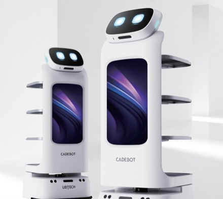
3 modular trays · 15 kg each · LiDAR + dual RGBD + ultrasonic · 650 mm min aisle · glass detection · 21.5″ + 10.1″ screens · NLP voice · 6 h runtime
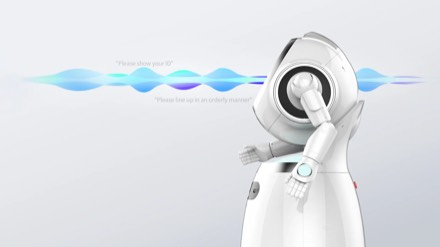
U-SLAM nav (LiDAR, RGB-D, ultrasound, IMU) · 0.3–1 m/s · 11.6″ touchscreen · face recognition · multilingual voice + gesture · ~12 h · auto-dock
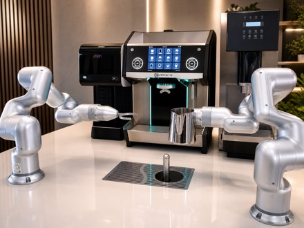
Dual-arm barista station in live production at the Hub · ~70–100 s per cup · milk + iced programs on some units
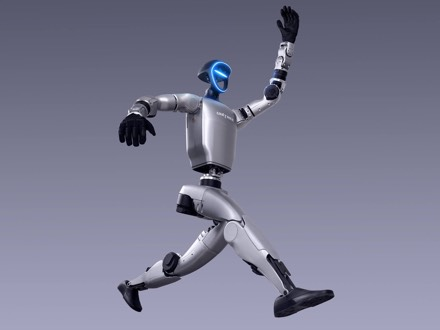
43 high-torque joints · dynamic AI mobility · Edu build on site
05 · Demo programme
Each one is real hospitality for the guests in the room and a repeatable demo Wonder Byte can sell afterwards — they're the same "robot experiences" priced on the hire page.
Cruzr greets at the heritage entry with voice before screen — name of the event, what's where, and “say 'guide me' and I'll walk you in.” Nothing requires touching or seeing a screen; the screen mirrors everything said in large print.
An audible escort from entry to any station: the robot self-announces continuously so it can be tracked by ear, announces arrivals, and stop/resume works by voice alone — no app. Research with blind users shows silent robots are the single biggest failure; this demo is the fix, made visible.
Cadebot's three trays become a feature: middle tray announced as the wheelchair-first tray, contents named per tray on arrival, slow approach, stop offset so it never blocks a wheelchair's path, and it waits — leaving only when tray sensors confirm items were taken or a generous dwell expires. At toast time: the cake run — one rehearsed hero route carrying the birthday cake, announced in audio and on screen so the whole room knows the moment is coming.
Order entirely by voice, hear the machine narrate its progress, get called by name at hand-off — with the cup placed at a consistent, announced position so a blind guest can find it without touching hot equipment.
Every announcement is triple-coded: voice, large-print high-contrast text on the robot's screen, and a light cue. Deaf and hard-of-hearing guests get everything visually; blind guests get everything audibly; nobody gets less.
A staged moment for the industry crowd: a robot mid-route meets a white cane / a wheelchair crossing / a guest saying “move away” — and stops, announces, re-routes. Yielding is programmed behaviour, and disabled guests can command it.
06 · Reference library
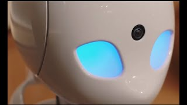
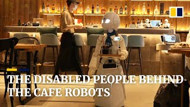
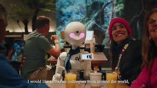
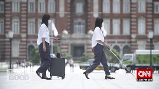
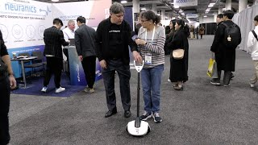
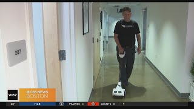
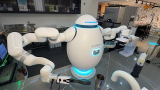
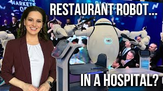
Wheelchair users asked for: visible robot height, stop positions that never block paths, redundant communication, explicit signals before speed changes, and a spoken 'move away' override. Demos 3, 5 and 6 are built from this.
17 blind/low-vision interviewees: robots without audio feedback are impossible to locate and frightening when they approach silently. Motivates the continuous self-announcement in Demos 2–3.
The closest thing to WCAG for physical robots — our checklist for every demo script. Also on GitHub.
Voice-commanded blind-guidance robot, public demos since 2024 — the proven interaction pattern for Demo 2.
First-person interview with a DAWN pilot operating a robot from home via eye tracking — the human story behind the remote-pilot idea.
Australian, from a blind user's perspective: guide robots should do less, reliably. Shaped Demos 2 and 6.
07 · Next steps